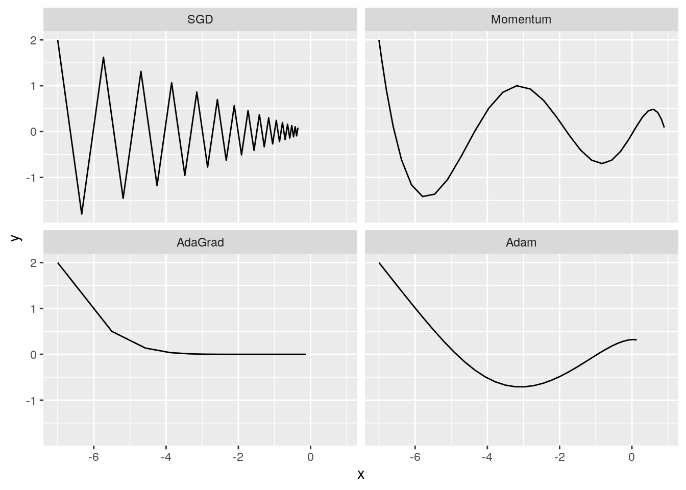
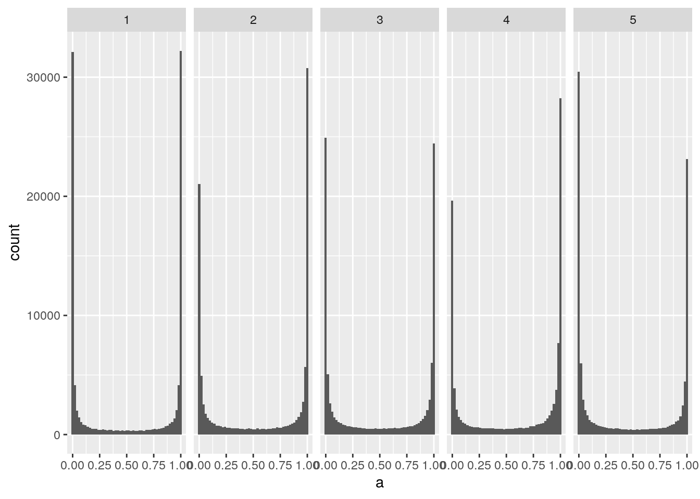
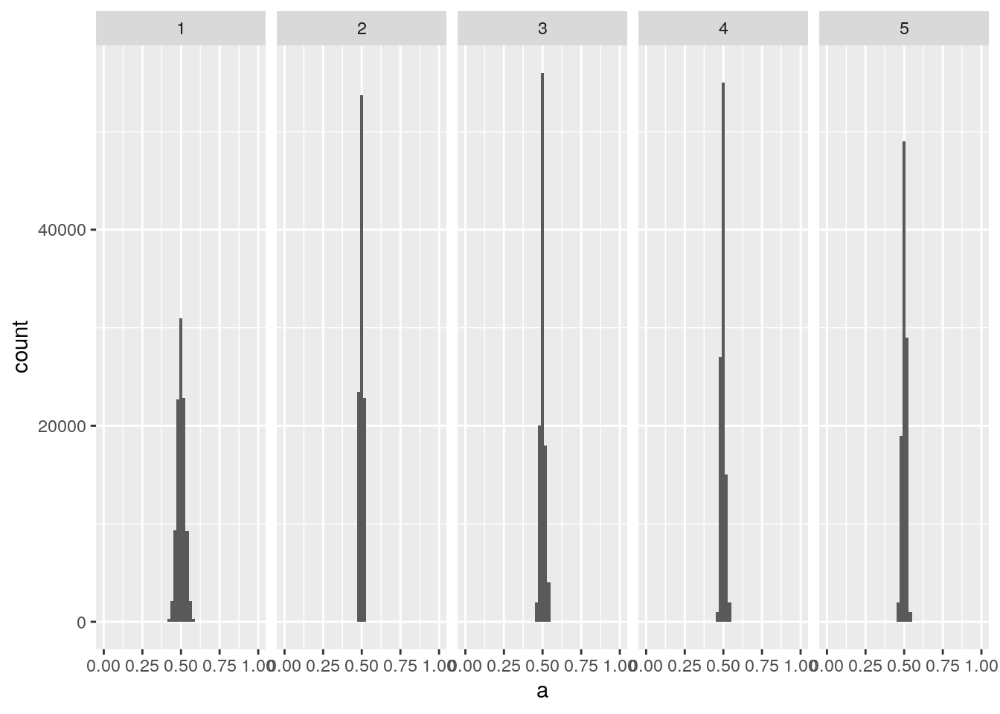
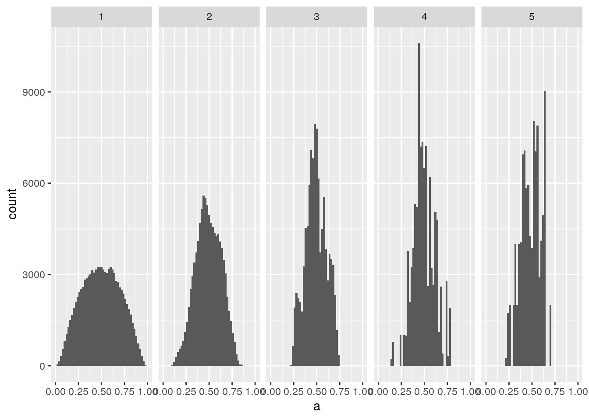
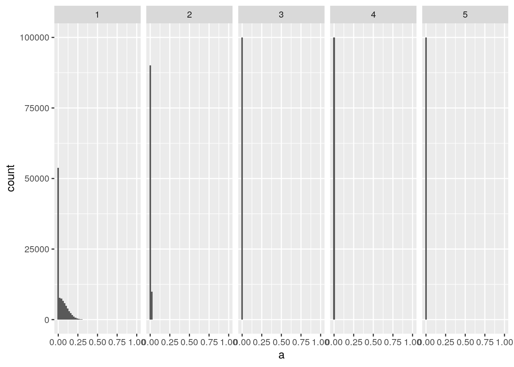
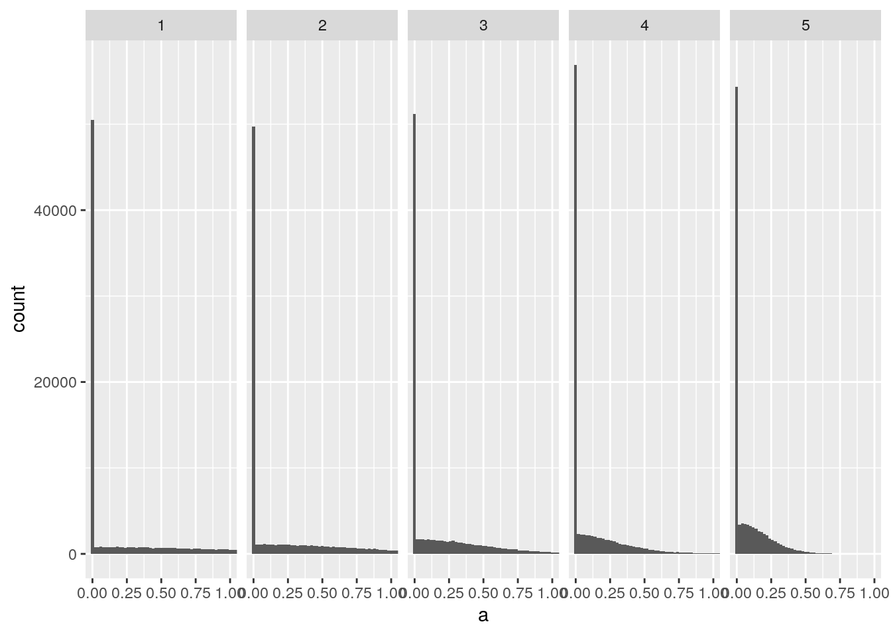
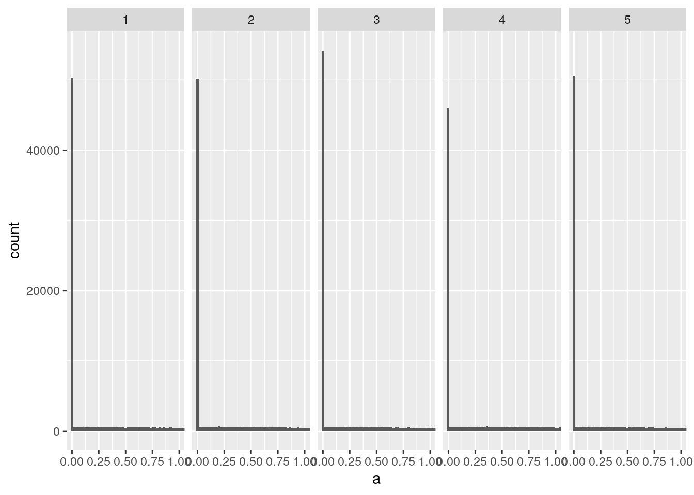

library(tidyverse)
library(R6)6章 学習に関するテクニック
準備
source("common/functions.R")パラメータの更新
SGD
SGD <- R6Class("SGD", list(
lr = NULL,
initialize = function(lr = 0.01) {
self$lr <- lr
},
update = function(params, grads) {
for (name in names(grads)) {
params[[name]] <- params[[name]] - self$lr * grads[[name]]
}
params
}))Momentum
Momentum <- R6Class("Momentum", list(
lr = NULL,
momentum = NULL,
v = NULL,
initialize = function(lr = 0.01, momentum = 0.9) {
self$lr <- lr
self$momentum <- momentum
},
update = function(params, grads) {
if (is.null(self$v)) {
self$v <- map(params, ~ 0)
}
for (name in names(params)) {
self$v[[name]] <- self$momentum * self$v[[name]] - self$lr * grads[[name]]
params[[name]] <- params[[name]] + self$v[[name]]
}
params
}))AdaGrad
AdaGrad <- R6Class("AdaGrad", list(
lr = NULL,
h = NULL,
initialize = function(lr = 0.01) {
self$lr <- lr
},
update = function(params, grads) {
if (is.null(self$h)) {
self$h <- map(params, ~ 0)
}
for (name in names(params)) {
self$h[[name]] <- self$h[[name]] + grads[[name]] ^ 2
params[[name]] <- params[[name]] - self$lr * grads[[name]] / (sqrt(self$h[[name]]) + 1e-7)
}
params
}))Adam
Adam <- R6Class("Adam", list(
lr = NULL,
beta1 = NULL,
beta2 = NULL,
iter = NULL,
m = NULL,
v = NULL,
initialize = function(lr = 0.001, beta1 = 0.9, beta2 = 0.999) {
self$lr <- lr
self$beta1 <- beta1
self$beta2 <- beta2
self$iter <- 0
},
update = function(params, grads) {
if (is.null(self$m)) {
self$m <- map(params, ~ 0)
self$v <- map(params, ~ 0)
}
self$iter <- self$iter + 1
lr_t <- self$lr * sqrt(1 - self$beta2 ^ self$iter) / (1 - self$beta1 ^ self$iter)
for (name in names(params)) {
self$m[[name]] <- self$m[[name]] + (1 - self$beta1) * (grads[[name]] - self$m[[name]])
self$v[[name]] <- self$v[[name]] + (1 - self$beta2) * (grads[[name]]^2 - self$v[[name]])
params[[name]] <- params[[name]] - lr_t * self$m[[name]] / (sqrt(self$v[[name]]) + 1e-7)
}
params
}))どの更新手法を用いるか？
f <- function(x, y) x^2 / 20 + y^2
df <- function(x, y) list(x / 10, 2 * y)
init_pos <- list(x = -7.0, y = 2.0)
params <- init_pos
optimizers <- list(
SGD = SGD$new(lr = 0.95),
Momentum = Momentum$new(lr = 0.1),
AdaGrad = AdaGrad$new(lr = 1.5),
Adam = Adam$new(lr = 0.3)
)
update <- function(optimizer, init_pos, n = 30) {
params <- init_pos
map_dfr(1:n, function(i) {
grads <- df(params$x, params$y) %>%
set_names(c("x", "y"))
params <<- optimizer$update(params, grads)
}) %>%
rbind(init_pos, .)
}
results <- map(optimizers, update, init_pos)
results %>%
imap_dfr(~ mutate(.x, optimizer = .y)) %>%
mutate(optimizer = factor(optimizer, levels = names(optimizers))) %>%
ggplot(aes(x, y)) +
geom_line() +
facet_wrap(vars(optimizer), nrow = 2)
重みの初期値
隠れ層のアクティベーション分布
node_num <- 100
hidden_layer_size <- 5
n <- 1000
set.seed(1)
x1 <- matrix(rnorm(n * node_num), n, node_num)
accum_activations <- function(init, activation = sigmoid) {
accumulate(
1:hidden_layer_size,
function(x, i) {
w <- matrix(rnorm(node_num * node_num), node_num, node_num) * init
z <- x %*% w
activation(z)
},
.init = x1
) %>% tail(-1)
}
plot_activations <- function(activations) {
activation_df <- activations %>%
imap_dfr(~ tibble(layer = .y, a = as.vector(.x)))
ggplot(activation_df, aes(x = a)) +
geom_histogram(binwidth = 0.02) +
coord_cartesian(xlim = c(0, 1)) +
facet_wrap(vars(layer), nrow = 1)
}0と1に偏ったデータ分布
activations <- accum_activations(1)
plot_activations(activations)
重みの標準偏差を0.01にする。
activations <- accum_activations(0.01)
plot_activations(activations)
Xavierの初期値を使う。
activations <- accum_activations(sqrt(1 / node_num))
plot_activations(activations)
ReLUの場合の重みの初期値
relu <- function(x) ifelse(x > 0, x, 0)標準偏差が0.01のガウス分布を重みの初期値とした場合
activations <- accum_activations(0.01, relu)
plot_activations(activations)
Xavierの初期値の場合
activations <- accum_activations(sqrt(1 / node_num), relu)
plot_activations(activations)
Heの初期値の場合
activations <- accum_activations(sqrt(2 / node_num), relu)
plot_activations(activations)
Batch Normalization
TODO
正則化
TODO
ハイパーパラメータの検証
TODO